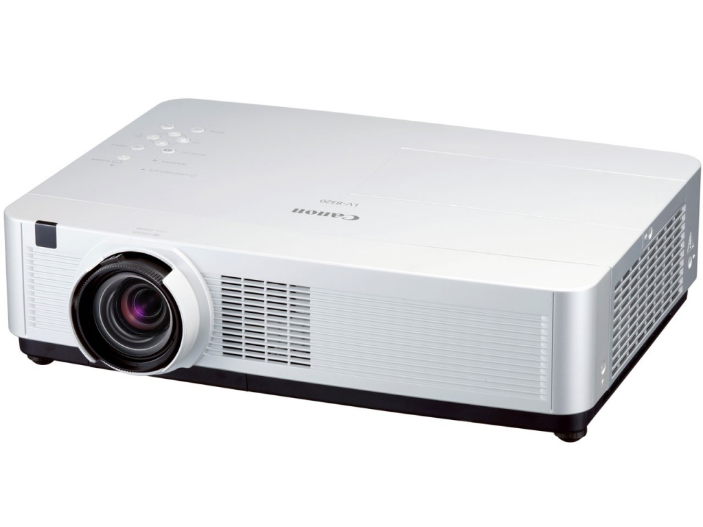

News
-
Ryotaro Tsuda wrote a new post, GGJ初参加学生のためのFAQ, on the site 汗を流して飯が旨い 4年 5か月前
GGJの季節がやってまいりました！
2年前はドッキドキの初参加だった私ももう今年で3回目のGGJになります．
最近では後輩からよくGGJについての質問を受ける立場になりました．
そうした初参加で不安な学生のために今回は首都圏在住の初参加学生をペルソナとしたFAQをまとめたいと思います．
まずはGGJについて軽くおさらい
GGJは2009年から始まり今年で8年目になるイベントです．
日本国内における認知も広がり，過去[…]
-
Ryotaro Tsuda wrote a new post, 特段書くことはないんだけど，大掃除したくないからエントリ書く, on the site 汗を流して飯が旨い 4年 5か月前
こんばんは，もう3時ですね．
特筆して書くことはないんですが，あと3時間くらいしたら両親が来て私は実家に強制送還され正月を迎える予定です．
それに向けて今は下宿先を大掃除せねばなのですが，何気なくTVを回していたらスターウォーズが流れてきて見ていて一向に進まない現状です．って何かとスターウォーズの話題でつきっきりの2015年歳末ですが，私はスターウォーズを1作品も見たことがないのを思い出しました．今流れているこ[…]
-
Ryotaro Tsuda wrote a new post, 福島GameJamで開発した作品が重賞受賞, on the site 汗を流して飯が旨い 4年 5か月前
2015年8月に行われた「東北ITコンセプト・福島GameJam」で開発致しました，
「花火メーカー」(チーム：小川流花火大会)がマッチロック賞とOPTPiX SpriteStudio賞を頂きました．
公式ページ：PressRelease: 東北ITコンセプト 福島GameJam2015 協賛企業賞発表と東京ゲームショウ(9/19,20)出展のお知らせ
以下選評
-[…]
-
shirai wrote a new post, 2016年度 白井研究室 卒研配属希望者 募集中, on the site Shirai Lab 4年 6か月前
募集日程
個人別志願調査票の配布 12月15日(火)
一次募集応募期間 12月18日(金)～25日(金)15時30分（締め切り厳守）
一次募集卒研配属決定 2016年1月15日(金)（予定）
二次募集 詳細は4月の新年度ガイダンスの専門科履修案内において発表今年は配属スケジュールが1ヶ月ぐらい後ろ倒しになっておりますね。
昨今はどの大学でも1-3年 […]
-
shirai wrote a new post, 白井研究室カレンダー2016完成！新4年生に引き継がれる研究室の暦…。, on the site Shirai Lab 4年 6か月前
白井研究室カレンダー2016が完成しました！
表紙はニコニコ超会議2015「ニコニコ学会β」での金賞受賞の写真ですね。
なお、各月のキャッチコピー（標語？）は以下のようになっております。
1月・・・一年の計は元旦に有り/一生の計は少壮の時に有り
2月・・・4年生は卒業・3年生は豆まきの時期
3月・・・ログインボーナスで研究室の座席を手に入れろ！！
4月・・・新学期！忙しさに負けずに元気出していこう […]
-
shirai wrote a new post, 【忘年会】2015年度最終ゼミ＆忘年会＆配属希望者相談会 開催のお知らせ, on the site Shirai Lab 4年 6か月前
【白井研究室配属希望者向け お知らせ】
12/24に本年度最終ゼミ＆忘年会＆配属希望者相談会（新人歓迎会）を開催することになりました。
参加希望者はFacebook上「白井研究室」でご登録くださいね。詳細は追ってこちらに掲載します。
主に学内向けですが、OB・社会人のご参加、差し入れなども歓迎です。

-
sakakibara wrote a new post, 第8回で学んだこと 1323101 榊原 諒／障害者差別解消法について, on the site 白井研セミナー 4年 6か月前
障害者差別解消法とは
⇒こちらディサビリティを持つ人を採用していくことをどう感じるか
と、聞かれたとき私は反対派に手を上げました。
それは現在の仕事効率が下がってしまうと考えたからです。しかし、先生に言われ考えたことは
必ずしも自分が障害をもたないと言えるのか。ということです。
そういわれたとき、確かに絶対障害を持たないとは言えないので、
もし障害を持ってしまった際にひどい扱いをされるのは嫌なので […] -
sakakibara wrote a new post, 第7回で学んだこと 1323101 榊原 諒／スケジュール管理と企画力, on the site 白井研セミナー 4年 6か月前
大学3年生くらいになったら、飲み会の幹事くらいならできるようになろう。
ということで、
新年会の幹事をすることになりました。
セミナー生は協力お願いします。候補日は1月14日or15日なので、研究室の先輩方もよければ参加ください。
セミナーではプロジェクターについても学びました。今までプロジェクターの知識はありませんでしたが、
例えば演習室でプロジェクションするには？等
いろいろな問題を考える […]  -
kai wrote a new post, 文字の比較、strcmp()について, on the site Kai's Develope Diary 4年 6か月前
C言語の課題でこんな問題があった。
あらかじめ作成したinput3.txtを読み込む。キーボードから英単語を1つ入力し、その単語がinput3.txtに何個含まれるかを出力するプログラムを作成しなさい。
input3.txtから読み込んだ文字を格納したchar型変数inputの配列と、入力した文字をstrcmp()で処理すればいいだけじゃん♪と考えたので次のようなプログラムを書いた。
#include
# […] -
shirai wrote a new post, DeNA主催 ゲーム関連就職イベント「HEAT3rd渋谷」に参加します, on the site Shirai Lab 4年 6か月前
DeNA主催ゲーム関連就職イベント「HEAT3rd渋谷」に参加します
〔公式情報〕学内向け：ゲーム業界希望者は学年に限らず遠慮なく参加してください
上記URLからエントリーを済ませ，12/4(金) 12/5(土)5限 K1-502で開催する学内参加者説明会およびFacebookグループ「Shirai.Job.Lab」に参加すること．
（非公開グループにつきURLは学内に掲示します，参加にあたっては学内者 […]

-
kai wrote a new post, Processing1.5.1で外付けカメラを使うには（内臓カメラ付きPC）, on the site Kai's Develope Diary 4年 6か月前
Processingでカメラを使うとき、PCの内蔵カメラを使っていたが、AR系のプログラムには少し使い勝手が悪い。
そこで、USBカメラを使おうと考えたがデバイスをインストールしても内蔵カメラが反応してしまう・・・
調べたところ、リファレンスにこんなことが書いてあった。 リファレンス サイト
下の方にCapture(parent, requestWidth, requestHeight, cameraNam […]
-
sakakibara wrote a new post, 第4回で学んだこととやりたいこと 1323101 榊原諒 ／マンガジェネレーターの設置と名刺作成, on the site 白井研セミナー 4年 6か月前
やりたいことリスト
・Photoshop,Illustratorを学びたい
・Youtubeやニコニコ動画に投稿するような動画編集技術を学びたい
・実践的な英会話を身につけたいマンガジェネレーターの設置(プロジェクター版)
用意するもの
・プロジェクター
・PC
・プリンター
・モニター?(写すとこ)
・マウス
・キーボード
・KinectとKinectのスタンド?(三脚?)
・アダプターとケ […] -
山口 裕捺 wrote a new post, 第4回で学んだこと 1323040 山口裕捺, on the site 白井研セミナー 4年 6か月前
今回は時間の使い方、マンガジェネレーターの組み立て、名刺を作ろう！ということで、まずは時間の使い方です。
自分がいつも何をしているのか、書き出してみると空白の時間がだいぶ出現していました。謎でした。笑
その空白の時間を、これからは自分のスキル磨きに使っていきます。次にマンガジェネレーターの組み立てです。今回は事前に先輩に教えてもらったものではなく、プロジェクター版の組み立てを行いました。
以下、私がそのとき […]
-
柏木 諒 wrote a new post, 第3回1223076柏木 諒／初めての一眼レフカメラ, on the site 白井研セミナー 4年 7か月前
こんにちは、柏木 諒です。
★今回のテーマ […]
-

admin wrote a new post, 白井准教授がメキシコのVR国際会議で基調講演, on the site Shirai Lab 4年 7か月前
白井准教授が11月15日から23日にかけてVARE’15というメキシコのモンテレイで開催される国際会議の基調講演に招へいされたため不在します。
2015 International Conference Virtual and Augmented Reality in Education (VARE´15)
Title: Entertainment Systems, Value Engineerin […]
-
shirai wrote a new post, 第5回(11//11)やったこと＆課題, on the site 白井研セミナー 4年 7か月前
第5回(11//11)やったこと
・言語化する、空気に消さない
・名刺作りでわかること、実際に手を動かさないとわからないこと。
・紙のフォーマットとソフトのフォーマットの違いを体感する
・自分にとって何が難しいのかを理解する
・レイアウト理論
・デザインにおけるコンセプト
・普通のSEってなに？
・自分に関係がある”システム”を探ってみる
・知識を言語化することで他人に伝える
・名刺の渡し方
・運と縁 […] -
admin wrote a new post, SIGGRAPH ASIA 2015 Kobeにて研究成果を発表します, on the site Shirai Lab 4年 7か月前
SIGGRAPH ASIA […]
-
s1323150 wrote a new post, 第3回 1323150 高橋弘樹／一眼レフの使い方。, on the site 白井研セミナー 4年 7か月前
こんにちは、学籍番号：1323150の高橋弘樹です。第３回の授業で学んだ事を紹介していこうとおもいます。
今回は一眼レフカメラの使い方を学びました。模型部でも一眼レフで写真を撮りますが、基本的に三脚でがっちり固定して使っているので、持ち方すら知りませんでした。
持ち方は、右手でカメラを持ち、左手でカメラを下から支えます。片足を軸足とし体重をかけ、脇を閉めて構えるとぶれにくいそうです。
初めて手に持って撮った […]
-
s1323150 wrote a new post, 自己紹介 1323150 高橋弘樹／模型を上手に作りたい。, on the site 白井研セミナー 4年 7か月前
自己紹介
氏名：高橋 弘樹（タカハシ コウキ）
特撮模型研究部に所属しています。主に戦車や船などのプラモデルやジオラマ作ってます。時々ガンダムも作ります。
部のサイトです。
こんなの作ります。1/35のＴ７２Ｍ１という戦車です。↓
将来は玩具関係で働きたいと思ってます。出来ればプラモデル関連の仕事に就きたいですが、別の職業でも趣味として続けたいと考えています。
今は卒研着手が危ういので[…]
-
山口 裕捺 wrote a new post, 第3回で学んだこと 1323040 山口裕捺, on the site 白井研セミナー 4年 7か月前
今回は一眼レフの使い方を学びました。
元々広報部で使ってはいたものの、やはり一眼レフはまだ慣れません。たくさんのモードがありましたが、それぞれどういった場面で使うのか、
ピントは手前に合わせること、対象物は中心に置かない場合もあること、色々な角度から撮ってみる事、ひとりでは得ていないであろう知識を得ることができたのではないかと思います。ちなみにこの除菌クリーナーは最初に撮影した写真です。 […]

- もっと読み込む